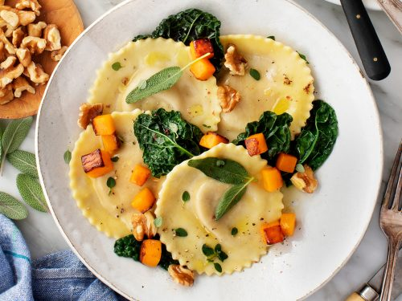

Skootch's Sensational Ravioli

Delicious butternut squash ravioli with seasonal herbs and spices.
This dish has everything - rich seasonal squash, soft buttery pasta, and a lively blend of herbs and spices. What more could you ask for in a dish?
Ingredients
- pasta
- flour
- butternut squash
- butter
- seasonal herb and spice blend
Steps
- Create raviolis by forming them into pouches containing the butternut squash
- Do something with the flour (not sure what, I'm not really a cook)
- Boil the raviolis for 4-6 minutes until tender
- Strain raviolis and add butter
- Mix in seasonal herb and spice blend, then toss until coated